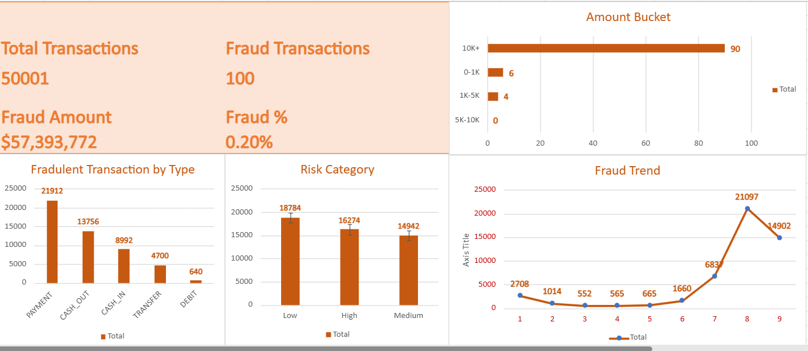

Projects

Marketing Analytics Dashboard
Built a customer segmentation and campaign analytics dashboard using SQL and Power BI to evaluate marketing performance, response rates, and revenue opportunities.

Bank Fraud Detection & Risk Analytics
Developed an Excel-based fraud detection dashboard to analyze transactions, assess risk levels, and support fraud investigation.
Stroke Prediction ML Project
Built an end-to-end machine learning pipeline using XGBoost, SHAP, and SMOTE to predict stroke risk with high recall and interpretability.